જો આ પ્રશ્નનો જવાબ ન મળ્યો હોય, તો ફરી જુઓ સંદર્ભ fs-id2202625.
જો આ પ્રશ્નનો જવાબ ન મળ્યો હોય, તો ફરી જુઓ સંદર્ભ fs-id3218226.
જો આ પ્રશ્નનો જવાબ ન મળ્યો હોય, તો ફરી જુઓ સંદર્ભ fs-id1563391.
સંખ્યા સમીકરણનો ઉકેલ છે કે નહીં તે નક્કી કરો
સમીકરણનો ઉકેલ
સંખ્યા સમીકરણનો ઉકેલ છે કે નહીં તે નક્કી કરો.
- સમીકરણમાં ચલની જગ્યાએ આપેલી સંખ્યા મૂકો.
- સમીકરણની બંને બાજુની પદાવલીઓ સરળ કરો.
- મળેલું સમીકરણ સાચું છે કે નહીં તે નક્કી કરો.
- જો તે સાચું હોય, તો સંખ્યા ઉકેલ છે.
- જો તે સાચું ન હોય, તો સંખ્યા ઉકેલ નથી.
ઉકેલ
ચિત્રમાં રૈખિક બીજગણિતનું સમીકરણ 6x - 17 = 16 છે, જે સામાન્ય રીતે ચલ x માટે ઉકેલવામાં આવે છે. બીજગણિતના આ મૂળભૂત પ્રશ્નમાં ચલને એકલો રાખવાનો છે. |
|
ની જગ્યાએ મૂકો. સફેદ પૃષ્ઠભૂમિ પર લખાણ છે: xની જગ્યાએ 5 મૂકો. સંખ્યા 5 લાલ છે અને બાકી લખાણ ઘેરા લીલાશ પડતા વાદળી રંગનું છે. |
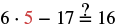 ગણિતનું સમીકરણ 6 x 5 - 17 ?= 16 છે; સંખ્યા 5 લાલ છે. પદાવલી પૂછે છે કે 6 ગુણ્યા 5માંથી 17 બાદ કરતાં 16 મળે છે કે નહીં. 6x5=30, 30-17=13. સંખ્યા 13, સંખ્યા 16 બરાબર નથી. |
| ગુણાકાર કરો. | 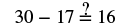 સફેદ પૃષ્ઠભૂમિ પર ગણિતનું સમીકરણ 30 - 17 ?= 16 છે. પ્રશ્નચિહ્ન બરાબરની નિશાનીની સીધું ઉપર છે; તે બંને બાજુની સમાનતા અંગે પૂછે છે. |
| બાદબાકી કરો. | ચિત્રમાં ગાણિતિક અસમતા છે: 13 બરાબર નથી 16. |
ઉકેલ
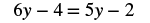 બીજગણિતનું સમીકરણ દર્શાવેલું છે: 6y - 4 = 5y - 2. |
|
ની જગ્યાએ મૂકો. ચિત્રમાં સૂચના છે: yની જગ્યાએ 2 મૂકો. સંખ્યા 2 લાલ છે અને બાકી લખાણ વાદળી લીલા રંગનું છે. |
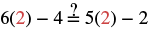 ગણિતનો પ્રશ્ન પૂછે છે કે 6(2) - 4 બરાબર છે કે નહીં 5(2) - 2. બંને બાજુ સરળ કરતાં 8 મળે છે, એટલે સમીકરણ સાચું છે. |
| ગુણાકાર કરો. | 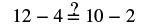 સમીકરણની ચકાસણી છે: 12 − 4 બરાબર છે કે નહીં 10 − 2? પ્રશ્નચિહ્ન બરાબરની નિશાનીની ઉપર છે. બંને બાજુ 8 મળે છે, તેથી 8 = 8 સાચું છે. |
| બાદબાકી કરો. | ચિત્રમાં સમીકરણ 8 = 8 પછી ખરાની નિશાની છે; તે વિધાન ગણિતની દૃષ્ટિએ સાચું હોવાનું દર્શાવે છે. |
સમાનતાના બાદબાકીના ગુણધર્મને નમૂના દ્વારા દર્શાવો
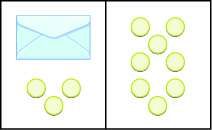
ચિત્ર ઊભી રેખાથી બે સરખા ભાગમાં વહેંચાયેલું છે. ડાબી બાજુ પરબીડિયું છે અને તેની નીચે ત્રણ ગોળી છે. જમણી બાજુ 8 ગોળી છે.
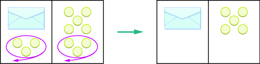
ડાબા નમૂનામાં પરબીડિયું અને ત્રણ ગોળી, જમણે આઠ ગોળી છે. બંને બાજુ ત્રણ ગોળી આસપાસ જાંબલી ગુલાબી રંગનું વલય અને બહાર તરફ તીર છે. બંને બાજુથી ત્રણ ગોળી દૂર કરતાં ડાબે માત્ર પરબીડિયું અને જમણે પાંચ ગોળી રહે છે. બંને નમૂના વચ્ચે લીલું તીર છે.
ચિત્ર ઊભી રેખાથી બે સરખા ભાગમાં વહેંચાયેલું છે. ડાબી બાજુ પરબીડિયું છે અને તેની નીચે ત્રણ ગોળી છે. જમણી બાજુ 8 ગોળી છે.
સફેદ પૃષ્ઠભૂમિ પર કાળા અક્ષરમાં ગણિતનું સમીકરણ x + 3 = 8 છે. |
|
| પહેલાં દરેક બાજુથી ત્રણ દૂર કરી. | 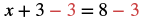 સમીકરણ x + 3 = 8માં xને એકલો રાખવા બંને બાજુથી 3 બાદ કરવામાં આવે છે: x + 3 - 3 = 8 - 3. બાદ કરેલા 3 લાલ છે. |
| પછી પાંચ બાકી રહી. | સફેદ પૃષ્ઠભૂમિ પર કાળા અક્ષરમાં સમીકરણ x = 5 છે. |
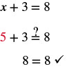
ચિત્રમાં મૂળ સમીકરણ x વત્તા 3 બરાબર 8 છે. ચકાસવા xની જગ્યાએ 5 મૂકો. સમીકરણ 5 વત્તા 3 બરાબર 8 બને છે. શું આ સાચું છે? ડાબી બાજુ 5 અને 3 ઉમેરતાં 8 મળે છે. બરાબરની નિશાનીની બંને બાજુ 8 છે.
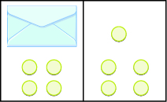
ચિત્ર ઊભી રેખાથી બે સરખા ભાગમાં વહેંચાયેલું છે. ડાબી બાજુ પરબીડિયું છે અને તેની નીચે 4 ગોળી છે. જમણી બાજુ 5 ગોળી છે.
ઉકેલ
| ડાબી બાજુ લખો પરબીડિયાની અંદરની ગોળીઓની સંખ્યા માટે, પછી આ ગોળી ઉમેરો, તેથી મળે . | |
| જમણી બાજુ છે ગોળી. | |
| બંને બાજુ સમાન છે. | |
| સમીકરણ ઉકેલવા આટલી ગોળી દરેક બાજુથી બાદ કરો. |
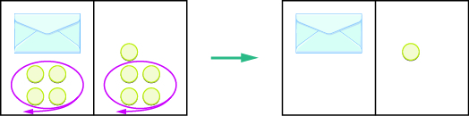
ડાબા નમૂનામાં પરબીડિયું અને ચાર ગોળી, જમણે પાંચ ગોળી છે. બંને બાજુ ચાર ગોળીની આસપાસ જાંબલી ગુલાબી વલય અને બહાર તરફ તીર છે. બંને બાજુથી ચાર ગોળી દૂર કરતાં ડાબે માત્ર પરબીડિયું અને જમણે એક ગોળી રહે છે. બંને નમૂના વચ્ચે લીલું તીર છે.
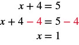
ચિત્રમાં આપેલું સમીકરણ x વત્તા 4 બરાબર 5 છે. બંને બાજુથી 4 દૂર કરતાં x વત્તા 4 ઓછા 4 બરાબર 5 ઓછા 4 મળે છે. ડાબી બાજુ વત્તા 4 અને ઓછા 4ની અસર દૂર થતાં માત્ર x રહે છે. જમણે 5 ઓછા 4 એટલે 1. સમીકરણ x બરાબર 1 બને છે.
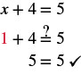
ચિત્રમાં મૂળ સમીકરણ x વત્તા 4 બરાબર 5 છે. ચકાસવા xની જગ્યાએ 1 મૂકો. સમીકરણ 1 વત્તા 4 બરાબર 5 બને છે. શું આ સાચું છે? ડાબી બાજુ 1 અને 4 ઉમેરતાં 5 મળે છે. બરાબરની નિશાનીની બંને બાજુ 5 છે.
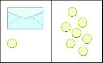
ચિત્ર ઊભી રેખાથી બે સરખા ભાગમાં વહેંચાયેલું છે. ડાબી બાજુ પરબીડિયું છે અને તેની નીચે એક ગોળી છે. જમણી બાજુ 7 ગોળી છે.
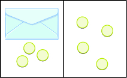
ચિત્ર ઊભી રેખાથી બે સરખા ભાગમાં વહેંચાયેલું છે. ડાબી બાજુ પરબીડિયું છે અને તેની નીચે ત્રણ ગોળી છે. જમણી બાજુ 4 ગોળી છે.
સમાનતાના બાદબાકીના ગુણધર્મ વડે સમીકરણો ઉકેલો
સમાનતાનો બાદબાકીનો ગુણધર્મ
સમાનતાના બાદબાકીના ગુણધર્મ વડે સમીકરણ ઉકેલો.
- ચલને એક બાજુ એકલો રાખવા સમાનતાના બાદબાકીના ગુણધર્મનો ઉપયોગ કરો.
- સમીકરણની બંને બાજુની પદાવલીઓ સરળ કરો.
- ઉકેલ ચકાસો.
ઉકેલ
સફેદ પૃષ્ઠભૂમિ પર કાળા અક્ષરમાં બીજગણિતનું સમીકરણ x + 8 = 17 છે. |
|
| બંને બાજુથી 8 બાદ કરો. | 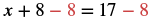 સમીકરણ x + 8 - 8 = 17 - 8 છે; તે ચલ xને એકલો રાખવા સમાનતાનો બાદબાકીનો ગુણધર્મ દર્શાવે છે. |
| સરળ કરો. | સફેદ પૃષ્ઠભૂમિ પર કાળા અક્ષરમાં ગણિતનું સમીકરણ x = 9 છે. |
સફેદ પૃષ્ઠભૂમિ પર કાળા અક્ષરમાં બીજગણિતનું મૂળભૂત સમીકરણ x + 8 = 17 છે. સરવાળાના આ સાદા સમીકરણમાં ચલ x માટે ઉકેલ શોધવાનો છે. |
|
ગણિતનું સમીકરણ 9 + 8 = 17 છે. સંખ્યા 9 લાલ છે અને બાકી સમીકરણ કાળું છે. |
|
ચિત્રમાં સમીકરણ 17 = 17 પછી ખરાની નિશાની છે; તે વિધાન સાચું છે અને ચકાસેલું છે તેમ દર્શાવે છે. |
ઉકેલ
સફેદ પૃષ્ઠભૂમિ પર કાળા અક્ષરમાં ગણિતનું સમીકરણ 100 = y + 74 છે. |
|
| બંને બાજુથી 74 બાદ કરો. | 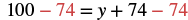 ગણિતનું સમીકરણ 100 - 74 = y + 74 - 74 છે. તે સમાનતાનો બાદબાકીનો ગુણધર્મ દર્શાવે છે: ચલ yને એકલો રાખવા બંને બાજુથી 74 બાદ કર્યા છે. |
| સરળ કરો. | સાદી સફેદ પૃષ્ઠભૂમિ પર સ્પષ્ટ, વાંચી શકાય એવા અક્ષરમાં ગણિતનું સમીકરણ 26 = y છે; તે ચલ yને કિંમત 26 આપવાનું દર્શાવે છે. |
| આ સંખ્યા મૂકો: આ ચલની જગ્યાએ: અને ચકાસો. 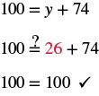 ચિત્રમાં મૂળ સમીકરણ 100 બરાબર y વત્તા 74 છે. ચકાસવા yની જગ્યાએ 26 મૂકો. સમીકરણ 100 બરાબર 26 વત્તા 74 બને છે. શું આ સાચું છે? જમણી બાજુ 26 અને 74 ઉમેરતાં 100 મળે છે. બરાબરની નિશાનીની બંને બાજુ 100 છે. |
સમાનતાના સરવાળાના ગુણધર્મ વડે સમીકરણો ઉકેલો
સમાનતાનો સરવાળાનો ગુણધર્મ
સમાનતાના સરવાળાના ગુણધર્મ વડે સમીકરણ ઉકેલો.
- ચલને એક બાજુ એકલો રાખવા સમાનતાના સરવાળાના ગુણધર્મનો ઉપયોગ કરો.
- સમીકરણની બંને બાજુની પદાવલીઓ સરળ કરો.
- ઉકેલ ચકાસો.
ઉકેલ
સફેદ પૃષ્ઠભૂમિ પર ઘેરા ઘાટા અક્ષરમાં બીજગણિતનું સાદું સમીકરણ x - 5 = 8 છે. |
|
| બંને બાજુ 5 ઉમેરો. | 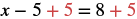 ગણિતનું સમીકરણ x ઓછા 5 વત્તા 5 બરાબર 8 વત્તા 5 છે. તે સમાનતાનો સરવાળાનો ગુણધર્મ દર્શાવે છે: બંને બાજુ 5 ઉમેર્યા છે આ સમીકરણમાં: x - 5 = 8. |
| સરળ કરો. | સફેદ પૃષ્ઠભૂમિ પર ગણિતનું સાદું સમીકરણ x = 13 છે. |
હવે ચકાસી શકીએ. ધારો કે . ચિત્રમાં લખાણ છે: હવે ચકાસી શકીએ. ધારો કે x = 13. ગણિત કે પ્રશ્ન ઉકેલવાની પ્રક્રિયાના આ પગલામાં ઉકેલ ચકાસવા ચલની જગ્યાએ કિંમત મૂકાય છે. |
|
સફેદ પૃષ્ઠભૂમિ પર કાળા અક્ષરમાં ગણિતનું સમીકરણ x - 5 = 8 છે. |
|
ગણિતનું સમીકરણ 13 - 5 =? 8 છે અને પ્રશ્નચિહ્ન બરાબરની નિશાનીની ઉપર છે. આ પદાવલી તપાસે છે કે તેરમાંથી પાંચ બાદ કરતાં ખરેખર આઠ મળે છે કે નહીં; વિધાન સાચું છે કારણ કે 13 - 5 બરાબર 8 છે. |
|
ગાણિતિક વિધાન 8 = 8 સાથે ખરાની નિશાની છે; તે સાચું હોવાનું કે ચકાસણી થયાનું દર્શાવે છે. |
ઉકેલ
સફેદ પૃષ્ઠભૂમિની વચ્ચે ગણિતનું સમીકરણ 27 = a - 16 છે. બીજગણિતના આ મૂળભૂત પ્રશ્નમાં ચલ a માટે ઉકેલ શોધવાનો છે. |
|
| દરેક બાજુ 16 ઉમેરો. | 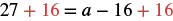 સમીકરણ 27 + 16 = a − 16 + 16 છે. બંને બાજુ નવું ઉમેરેલું +16 લાલ છે. મૂળ a − 16 સહિત બાકી ચિહ્નો કાળાં છે. |
| સરળ કરો. | સફેદ પૃષ્ઠભૂમિ પર સમીકરણ 43 = a છે; તે ચલ aની કિંમત 43 હોવાનું દર્શાવે છે. |
હવે ચકાસી શકીએ. ધારો કે . લખાણ છે: હવે ચકાસી શકીએ. ધારો કે a = 43. સંખ્યા 43 લાલ છે અને બાકી લખાણ ઘેરા લીલાશ પડતા વાદળી રંગનું છે. |
સાદી સફેદ પૃષ્ઠભૂમિ પર બીજગણિતનું મૂળભૂત સમીકરણ 27 = a - 16 છે. ચલ a માટે ઉકેલ શોધવાનો છે. |
ગણિતનો પ્રશ્ન 27 ?= 43 - 16 છે. બરાબરની નિશાનીની ઉપર પ્રશ્નચિહ્ન છે, જે બંને બાજુ સમાન છે કે નહીં તે પૂછે છે. સંખ્યા 43 લાલ છે. |
|
સંખ્યા 27 બરાબર 27 દર્શાવેલી છે, પછી ખરાની નિશાની છે જે સાચું હોવાનું કે સંમતિ દર્શાવે છે. |
શબ્દસમૂહોને બીજગણિતનાં સમીકરણોમાં ફેરવો
- બરાબર છે
- એટલું જ છે
- છે
- મળે છે
- હતું
- થશે
ઉકેલ
| “બરાબર” દર્શાવતા શબ્દો શોધો. | 6 અને 9નો સરવાળોબરાબર છે15.6 અને 9નો સરવાળો15. “6 અને 9નો સરવાળો બરાબર છે 15” લખાણને “6 અને 9નો સરવાળો = 15” તરીકે દર્શાવવામાં આવ્યું છે. આ સમાનતાવાળું વિધાન, એટલે સમીકરણ, છે; માત્ર ગાણિતિક પદાવલી નથી. |
| = નિશાની લખો. | |
| જે શબ્દનો અર્થ છે બરાબર તેની ડાબી બાજુના શબ્દોને બીજગણિતની પદાવલીમાં ફેરવો. | સફેદ પૃષ્ઠભૂમિ પર ગણિતનો સાદો પ્રશ્ન છે: સમીકરણ 6 + 9 = ___, જેમાં જવાબ માટે ખાલી જગ્યા છે. તે ઉકેલવાનો સરવાળો દર્શાવે છે. |
| જે શબ્દનો અર્થ છે બરાબર તેની જમણી બાજુના શબ્દોને બીજગણિતની પદાવલીમાં ફેરવો. | સફેદ પૃષ્ઠભૂમિ પર ઘેરા વાદળી અક્ષરમાં સમીકરણ 6 + 9 = 15 છે. |
ઉકેલ
| “બરાબર” દર્શાવતા શબ્દો શોધો. | 8 અને 7નું ગુણનફળબરાબર છે56.8 અને 7નું ગુણનફળ56. ચિત્ર બતાવે છે કે “8 અને 7નું ગુણનફળ બરાબર છે 56” જેવા વર્ણનાત્મક ગાણિતિક વિધાનમાં “બરાબર છે” એ બરાબરની નિશાની (=) જેટલો અર્થ ધરાવે છે. તેને “8 અને 7નું ગુણનફળ = 56” તરીકે દર્શાવ્યું છે. |
| = નિશાની લખો. | |
| જે શબ્દનો અર્થ છે બરાબર તેની ડાબી બાજુના શબ્દોને બીજગણિતની પદાવલીમાં ફેરવો. | સફેદ પૃષ્ઠભૂમિ પર ગણિતનું સમીકરણ 8 . 7 = _ છે. ગુણાકારના આ પ્રશ્નમાં 8 અને 7નું ગુણનફળ ભરવાનું છે. |
| જે શબ્દનો અર્થ છે બરાબર તેની જમણી બાજુના શબ્દોને બીજગણિતની પદાવલીમાં ફેરવો. | ચિત્રમાં ગુણાકારનું સમીકરણ 8 ગુણ્યા 7 બરાબર 56 છે; તેને ઘેરા વાદળી કે રાખોડી અક્ષરમાં 8, ટપકું, 7 = 56 તરીકે લખેલું છે. |
ઉકેલ
| “બરાબર” દર્શાવતા શબ્દો શોધો. | અને 3ના તફાવતને બમણો કરતાં 18 મળે. સફેદ પૃષ્ઠભૂમિ પર લખાણ છે: x અને 3ના તફાવતના બમણા કરતાં મળે 18. “મળે” શબ્દની આસપાસ પાતળો કાળો લંબચોરસ છે. |
| મુખ્ય શબ્દો ઓળખો: બમણું; … અને …નો તફાવત. | બમણું એટલે બે ગણા. |
| બીજગણિતમાં ફેરવો. | અને 3ના તફાવતને બમણો કરતાં 18 મળે. બમણો x અને 3નો તફાવત મળે 18 ચિત્ર શાબ્દિક પ્રશ્ન “x અને 3ના તફાવતના બમણા કરતાં મળે 18”ને બીજગણિતના સમીકરણ 2(x - 3) = 18માં ફેરવે છે અને અનુરૂપ ભાગો દર્શાવે છે. |
સમીકરણ બનાવો અને ઉકેલો
ઉકેલ
| ત્રણ ઉમેરતાં આ ચલમાં: x બરાબર થાય 47. | ||
| સમીકરણમાં ફેરવો. | સફેદ પૃષ્ઠભૂમિ પર ઘાટા, છેડા પર સેરિફ વગરના અક્ષરમાં બીજગણિતનું સાદું સમીકરણ x + 3 = 47 છે. |
|
| સમીકરણની બંને બાજુથી 3 બાદ કરો. | 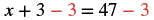 ગણિતનું સમીકરણ x + 3 - 3 = 47 - 3 છે. બંને બાજુથી બાદબાકી દર્શાવવા ડાબી બાજુનો બીજો 3 અને જમણી બાજુનો 3 લાલ છે. |
|
| સરળ કરો. | સફેદ પૃષ્ઠભૂમિ પર કાળા અક્ષરમાં ગણિતનું સમીકરણ x = 44 છે. |
|
| ચકાસી શકીએ. ધારો કે . | સાદી સફેદ પૃષ્ઠભૂમિ પર ચલ xવાળું ગણિતનું સમીકરણ x + 3 = 47 છે. |
|
સમીકરણમાં 44 + 3 છે અને 47ની પહેલાંની બરાબરની નિશાની ઉપર પ્રશ્નચિહ્ન છે, જે ચકાસણી કરવાનું કહે છે. |
||
સંખ્યા 47 બરાબર 47 છે અને પછી ખરાની નિશાની છે; તે ગાણિતિક વિધાન સાચું હોવાનું કે ચકાસણી થયાનું દર્શાવે છે. |
ઉકેલ
| આ રાશિઓનો તફાવત: y અને 14 બરાબર છે 18. | ||
| સમીકરણમાં ફેરવો. | સફેદ પૃષ્ઠભૂમિ પર કાળા અક્ષરમાં ગણિતનું સમીકરણ y - 14 = 18 છે. બીજગણિતના આ મૂળભૂત પ્રશ્નમાં y અજાણ ચલ છે. |
|
| બંને બાજુ 14 ઉમેરો. | 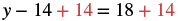 ગણિતનું સમીકરણ y - 14 + 14 = 18 + 14 છે. બંને બાજુ ઉમેરાયેલી સંખ્યા 14 લાલ છે. |
|
| સરળ કરો. | સફેદ પૃષ્ઠભૂમિ પર કાળા અક્ષરમાં ગણિતનું સમીકરણ y = 32 છે. ચલ yને સંખ્યાત્મક કિંમત 32 બરાબર મૂકેલો છે; તે સાદી કિંમત સોંપણી કે અચળ દર્શાવે છે. |
|
| ચકાસી શકીએ. ધારો કે . | સાદી સફેદ પૃષ્ઠભૂમિ પર ગણિતનું સમીકરણ y - 14 = 18 છે. બીજગણિતના આ મૂળભૂત પ્રશ્નમાં ચલ y માટે ઉકેલ શોધવાનો છે. |
|
ગણિતનું સમીકરણ 32 ઓછા 14, પછી ઉપર પ્રશ્નચિહ્નવાળી બરાબરની નિશાની અને 18 દર્શાવે છે; તે પૂછે છે કે 32 - 14 બરાબર છે કે નહીં 18. |
||
સમીકરણ 18 = 18 પછી ખરાની નિશાની છે, જે સમાનતા સાચી હોવાનું દર્શાવે છે. |
વધારાનાં ઑનલાઇન સંસાધનો જુઓ
મુખ્ય સંકલ્પનાઓ
- સંખ્યા સમીકરણનો ઉકેલ છે કે નહીં તે નક્કી કરો.
- સમીકરણમાં ચલની જગ્યાએ આપેલી સંખ્યા મૂકો.
- સમીકરણની બંને બાજુની પદાવલીઓ સરળ કરો.
- મળેલું સમીકરણ સાચું છે કે નહીં તે નક્કી કરો. જો તે સાચું હોય, તો સંખ્યા ઉકેલ છે.
- સમાનતાનો બાદબાકીનો ગુણધર્મ
- કોઈ પણ સંખ્યાઓ માટે: , અને ,
જો તો
- કોઈ પણ સંખ્યાઓ માટે: , અને ,
- સમાનતાના બાદબાકીના ગુણધર્મ વડે સમીકરણ ઉકેલો.
- ચલને એક બાજુ એકલો રાખવા સમાનતાના બાદબાકીના ગુણધર્મનો ઉપયોગ કરો.
- સમીકરણની બંને બાજુની પદાવલીઓ સરળ કરો.
- ઉકેલ ચકાસો.
-
સમાનતાનો સરવાળાનો ગુણધર્મ
- કોઈ પણ સંખ્યાઓ માટે: , અને ,
જો તો
- કોઈ પણ સંખ્યાઓ માટે: , અને ,
- સમાનતાના સરવાળાના ગુણધર્મ વડે સમીકરણ ઉકેલો.
- ચલને એક બાજુ એકલો રાખવા સમાનતાના સરવાળાના ગુણધર્મનો ઉપયોગ કરો.
- સમીકરણની બંને બાજુની પદાવલીઓ સરળ કરો.
- ઉકેલ ચકાસો.
અભ્યાસથી નિપુણતા
- ⓐ
- ⓑ
- ⓐ હા
- ⓑ ના
- ⓐ
- ⓑ
- ⓐ
- ⓑ
- ⓐ ના
- ⓑ હા
- ⓐ
- ⓑ
- ⓐ
- ⓑ
- ⓐ હા
- ⓑ ના
- ⓐ
- ⓑ
- ⓐ
- ⓑ
- ⓐ ના
- ⓑ હા
- ⓐ
- ⓑ
- ⓐ
- ⓑ
- ⓐ ના
- ⓑ હા
- ⓐ
- ⓑ
- ⓐ
- ⓑ
- ⓐ ના
- ⓑ હા
- ⓐ
- ⓑ
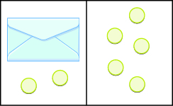
ચિત્ર ઊભી રેખાથી બે સરખા ભાગમાં વહેંચાયેલું છે. ડાબી બાજુ પરબીડિયું છે અને તેની નીચે 2 ગોળી છે. જમણી બાજુ 5 ગોળી છે.
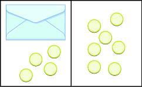
ચિત્ર ઊભી રેખાથી બે સરખા ભાગમાં વહેંચાયેલું છે. ડાબી બાજુ પરબીડિયું છે અને તેની નીચે 4 ગોળી છે. જમણી બાજુ 7 ગોળી છે.
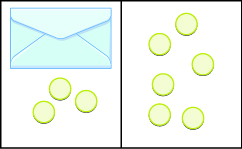
ચિત્ર ઊભી રેખાથી બે સરખા ભાગમાં વહેંચાયેલું છે. ડાબી બાજુ પરબીડિયું છે અને તેની નીચે ત્રણ ગોળી છે. જમણી બાજુ 6 ગોળી છે.
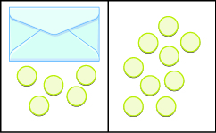
ચિત્ર ઊભી રેખાથી બે સરખા ભાગમાં વહેંચાયેલું છે. ડાબી બાજુ પરબીડિયું છે અને તેની નીચે 5 ગોળી છે. જમણી બાજુ 9 ગોળી છે.
રોજિંદા જીવનમાં ગણિત
લેખન અભ્યાસ
સ્વમૂલ્યાંકન
| હું આ કરી શકું છું… | વિશ્વાસપૂર્વક | થોડી મદદથી | ના—મને સમજાતું નથી! |
|---|---|---|---|
| સંખ્યા સમીકરણનો ઉકેલ છે કે નહીં તે નક્કી કરવું. | |||
| સમાનતાના બાદબાકીના ગુણધર્મને નમૂના દ્વારા દર્શાવવો. | |||
| સમાનતાના બાદબાકીના ગુણધર્મ વડે સમીકરણો ઉકેલવાં. | |||
| સમાનતાના સરવાળાના ગુણધર્મ વડે સમીકરણો ઉકેલવાં. | |||
| શબ્દસમૂહોને બીજગણિતનાં સમીકરણોમાં ફેરવવાં. | |||
| સમીકરણ બનાવીને ઉકેલવું. |
ગણિતની કુશળતાનું સ્વમૂલ્યાંકન કોષ્ટક: ઉકેલ નક્કી કરવો, સરવાળા અને બાદબાકીના ગુણધર્મો વડે સમીકરણનો નમૂનો બનાવવો અને ઉકેલવો, તથા શબ્દસમૂહોને બીજગણિતનાં સમીકરણોમાં ફેરવવા.